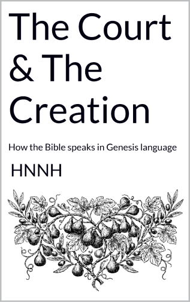
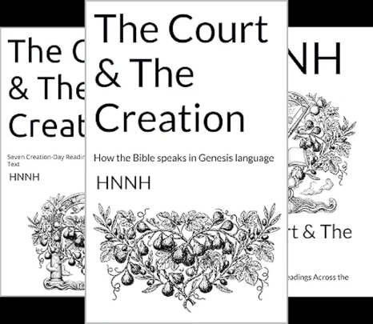

New and Available Now on Amazon
"Nine volumes. The same engine. Every thread traced back to Genesis 1."
View the Series on Amazon →In the beginning God made the heaven and the earth. And the earth was waste and without form; and it was dark on the face of the deep: and the Spirit of God was moving on the face of the waters. — Genesis 1:1–2 (BBE)
Most people who encounter the law of assumption — the principle that consciousness creates reality by occupying an identity before the evidence appears — are pointed toward the Bible as its source. Neville Goddard spent a lifetime saying so. What he did not leave behind was a map of the text itself: a way to open any passage and see the mechanism operating in the Hebrew structure, verse by verse, name by name, in the vocabulary the court fixed at creation. That is what this series is. The creation story is not the preamble to the Bible. It is the operating language of the entire text. Elohim — judges and rulers — declares seven days of categories at the opening, and every narrative that follows draws on those categories in sequence: the deep before the dry land, the enclosure before the emergence, the seed before the harvest. YHVH — present consciousness — occupies a new I AM before the outer world confirms it, and Elohim enforces accordingly. That is the engine. It was never hidden. It was written in the first chapter and repeated without interruption for sixty-six books. Nine volumes of The Court and the Creation trace that mechanism through the text itself, so that what was always encoded becomes readable — and what was always available becomes usable.
Once the three operators are located — YHVH, I AM, Elohim — the reader does not need this framework again. The text supplies its own interpretation. Whatever the reader is currently moving through, the court has already run a narrative for it: an enclosure, an assumed identity, an enforcement. The stories are not illustrations of the law. They are the law, running through different names, in the same creation-day vocabulary, available to be read directly by anyone who knows what they are looking at. Scripture becomes less a book that requires explanation and more a structure the reader can enter — and find themselves already inside.
Volume One — The Opening Vocabulary: The Engine Named and Located
Before a single narrative can be read clearly, the three operators must be located in the text. Most readers of the Bible — and most students of the law of assumption — encounter these terms as names or titles rather than as functional descriptions of how consciousness works. Elohim is not a singular deity. It is a plural Hebrew noun: judges and rulers, the governing structure of consciousness that enforces whatever identity is dominantly occupied. YHVH is the existing one — present consciousness, here and now, absorbing or imagining. Ehyeh, I AM, is the identity YHVH chooses to assume, which Elohim is then constitutionally bound to deliver. Once these three are located, every passage in the Bible becomes legible in a way it was not before. The flood is not a punishment — it is the court running the Genesis deep through Noah to produce a reset identity. The pit is not a disaster — it is the court using an enclosure to enforce the assumed I AM on the other side. Volume One hands the reader four questions that unlock any passage, and the mechanism proves itself in the first application. After reading it, the text will never read the same way again.
Volume Two — Seven Demonstrations: The Law Running Through Seven Narratives
The law of assumption, as Neville taught it, rests on a single movement: occupy the feeling of the wish fulfilled before the outer world changes, and the outer world must change to match. Volume Two shows that movement encoded in seven biblical narratives spanning from Noah to Ruth — not as allegory, not as metaphor, but as structural demonstration. Noah occupies the enclosure while the deep covers the earth: the I AM assumed inside the containment is what Elohim delivers on the other side. The Song of Solomon demonstrates the leave and cleave statute running through feeling before the narrative confirms the union — YHVH occupying the I AM of the beloved while the outer evidence is still absent. Ruth demonstrates the same mechanism at the level of one woman, one field, one name — and the line she enters produces the royal naming chain. These are not inspiring stories. They are precise technical demonstrations of the same court running the same law through different figures in different eras. The law does not change. Only the names do.
Volume Three — The Letters of Paul: The Same Engine, A Different Century
Paul is routinely read as theology. What he is, structurally, is a precise operator of the court's own vocabulary — writing in the first century in the same Genesis categories the court fixed at creation, toward the same enforcement sequence the opening chapters established. Romans 8, Philippians 4, Galatians 3 — each one carries the same instruction Neville spent decades unpacking: occupy the end before the beginning changes, declare the identity before the evidence arrives, let Elohim enforce after its kind. Paul's own name encodes the condition he writes from: small, contracted, the prior state. He addresses Rome — strength, the enforced identity — because the one who files the I AM from within the enclosure is the one the court delivers into the open country. Volume Three reads seven of Paul's letters as concentrated Genesis vocabulary, and shows that what he is describing is not a new religion. It is the same court giving the same instruction in the language of a different era.
Volume Four — The Parables: The Court Speaking Plainly About Its Own Operation
The parables are the most direct explanation of the law of assumption in the entire biblical text — and they are almost never read that way. The Prodigal Son does not wait to arrive home before he assumes the identity of son. He assumes it inside the enclosure, in the far country, in the moment of decision, before a single outer circumstance has changed. That is the filing. Elohim enforces the return. The Sower is not a lesson about evangelism. It is the court explaining why the same seed produces different outcomes: the identity of the ground determines the yield, not the quality of the declaration. The Vine and the Branches demonstrates the leave and cleave statute at kingdom scale — the branch that remains in the vine produces after the vine's kind because Elohim enforces after its kind without exception. Every image in the parables — seed, field, shepherd, lamp, vine, debt — is a Genesis creation category. The parables are not moral instruction. They are the court's own technical description of how it operates. Volume Four reads seven of them in sequence, and what the reader finds is that the one who spoke them was not introducing a new law. He was naming the old one plainly.
Volume Five — Revelation: The Opening Vocabulary at Its Final Declaration
Revelation is the passage most readers treat as a separate and opaque book — future events, symbolic beasts, a different kind of language. It is none of those things. It is the court's opening vocabulary — every category fixed across the seven days of Genesis — running at its fullest and final declaration. The sea creatures are Day Five. The dry land is Day Three. The darkness and the light are Day One. The woman clothed with the sun is the assumed I AM at the point of full identification. The New Heaven and New Earth is not a future landscape — it is Elohim delivering the enforced state in the creation-day vocabulary the court established at the beginning. Volume Five reads seven passages from Revelation in that light, and what emerges is not a prophecy timeline but a completion: the same engine that opened in Genesis, running to its declared end, in the same language, without deviation. The vocabulary was set on the days of creation. Revelation runs every thread back to the first.
Volume Six — The Patriarchs: The Name Before the Story
This is the volume that will permanently change how a reader encounters a biblical name. Names in scripture are not labels. They are compressed identity codes — the nature of the state declared before the narrative begins, the quality of the I AM that Elohim is already constitutionally bound to enforce. Abraham means father of a multitude. Isaac means laughter. Israel means he shall prevail. Joseph means he shall add. David means beloved. The story does not produce the meaning. The meaning produces the story. Elohim enforces after its kind, and the kind is declared in the name before a single event occurs. Volume Six reads seven patriarchal narratives — Abraham, Isaac, Jacob, Judah, Joseph, Saul, David — and shows that in every case the outcome was encoded in the name, the name was assumed as I AM, and the court enforced accordingly. For anyone who has studied the law of assumption and wondered why Neville kept returning to the power of a name: this volume is the answer in full.
Volume Seven — Women of the Court: Seven Identity Filings
Seven women — Sarah, Rebekah, Leah, Rachel, Deborah, Hannah, Esther — and in each case the same court running the same mechanism through a different filing. What emerges across these seven narratives is something that is almost never named in either biblical teaching or manifestation literature: the woman in scripture is not the passive recipient of the court's decisions. She is consistently the one who runs the Genesis 1:3 mechanism most directly. The spoken word. The named child. The filed vow. The song that is not the celebration after the enforcement — it is the enforcement itself. Hannah's song precedes Samuel. It is not the response to the answered prayer. It is the prayer operating as a declaration of completed fact, which Elohim receives and enforces. Esther approaches the king already occupying the identity that belongs inside the throne room — the I AM assumed before the outer permission is granted. Sarai is renamed Sarah before the womb opens. The court speaks the new name into the prior state and Elohim enforces accordingly. Seven filings. Seven enforcements. The same law without exception.
Volume Eight — The Court and the Christ: Eight Creation-Day Readings in the Gospel Narrative
The name Yeshua — rendered Jesus in Greek — means YHVH delivers: present consciousness brought into the wide and open place from the narrow condition. The court's prior filing is written into the identity itself before the Gospel opens. Every event that follows is Elohim enforcing what the name already declared. Volume Eight reads eight passages — the Baptism, the Temptation, the Wedding at Cana, the Feeding of the Five Thousand, the Transfiguration, the Raising of Lazarus, the I AM statements of John's Gospel, and the Crucifixion and Resurrection — not as theological events but as precise demonstrations of the court's mechanism. The Raising of Lazarus is the enclosure at its most explicit: four days, the deep, the darkness, the stone — and then the I AM statement filed at the threshold before the stone is moved. I am the resurrection. The court receives the declaration. Elohim enforces it. The stone is moved after the identity is assumed, not before. This is the sequence Neville named. This is where it was written.
Volume Nine — Job: The Court Examines What It Has Declared Upright
Job is the longest single examination the court runs in the entire biblical text. Forty-two chapters. One declared state. The same prosecutorial question the Garden opened. And what most readers miss — what changes everything once it is seen — is that Job's complaint language throughout the dialogue is drawn directly from the Genesis creation categories: the sea, the darkness, the morning, the foundations, the gates of death. Job is not describing his circumstances. He is filing identity claims in the court's own vocabulary, and Elohim is enforcing each one after its kind. The court receives every misfiled entry and returns them corrected through the whirlwind — not as punishment, but as the court's own amendment process. The dialogue and the whirlwind are not two separate movements. They are one continuous exchange: the same vocabulary filed twice, once as false jurisdiction, once as the corrected I AM. Elohim does not abandon what it has declared upright. It runs the enclosure at full length, receives the amended filing, and enforces accordingly. The vocabulary was set on the days of creation. Job runs every thread — and the restoration at the end is not a reward. It is the court delivering what the corrected I AM declared.